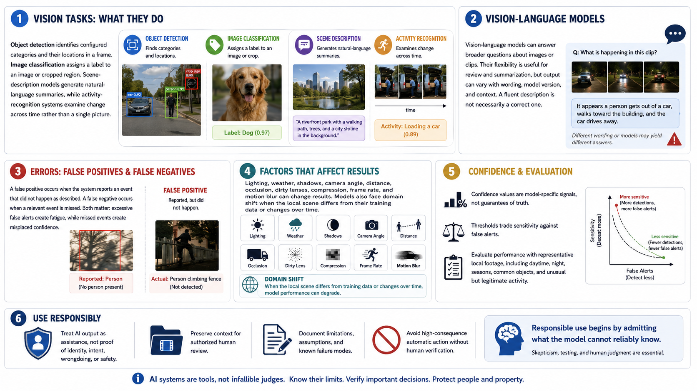

Vision Model Capabilities and Limits
Connecting to LMS... Progress: in progress

Narration
Object detection identifies configured categories and their locations in a frame. Image classification assigns a label to an image or cropped region. Scene-description models generate natural-language summaries, while activity-recognition systems examine change across time rather than a single picture.
Vision-language models can answer broader questions about images or clips. Their flexibility is useful for review and summarization, but output can vary with wording, model version, and context. A fluent description is not necessarily a correct one.
A false positive occurs when the system reports an event that did not happen as described. A false negative occurs when a relevant event is missed. Both matter: excessive false alerts create fatigue, while missed events create misplaced confidence.
Lighting, weather, shadows, camera angle, distance, occlusion, dirty lenses, compression, frame rate, and motion blur can change results. Models also face domain shift when the local scene differs from their training data or changes over time.
Confidence values are model-specific signals, not guarantees of truth. Thresholds trade sensitivity against false alerts. Evaluate performance with representative local footage, including daytime, night, seasons, common objects, and unusual but legitimate activity.
Treat AI output as assistance, not proof of identity, intent, wrongdoing, or safety. Preserve context for authorized human review, document limitations, and avoid high-consequence automatic action. Responsible use begins by admitting what the model cannot reliably know.